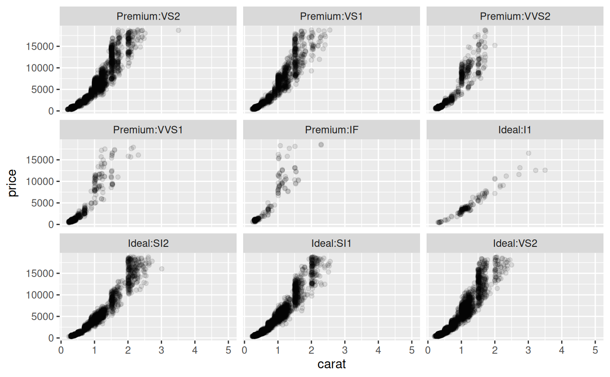

This extension to ggplot2::facet_wrap() will allow you to split
a facetted plot over multiple pages. You define a number of rows and columns
per page as well as the page number to plot, and the function will
automatically only plot the correct panels. Usually this will be put in a
loop to render all pages one by one.
Usage
facet_wrap_paginate(
facets,
nrow = NULL,
ncol = NULL,
scales = "fixed",
shrink = TRUE,
labeller = "label_value",
as.table = TRUE,
switch = deprecated(),
drop = TRUE,
dir = "h",
strip.position = "top",
page = 1
)Arguments
- facets
A set of variables or expressions quoted by
vars()and defining faceting groups on the rows or columns dimension. The variables can be named (the names are passed tolabeller).For compatibility with the classic interface, can also be a formula or character vector. Use either a one sided formula,
~a + b, or a character vector,c("a", "b").- nrow, ncol
Number of rows and columns
- scales
Should scales be fixed (
"fixed", the default), free ("free"), or free in one dimension ("free_x","free_y")?- shrink
If
TRUE, will shrink scales to fit output of statistics, not raw data. IfFALSE, will be range of raw data before statistical summary.- labeller
A function that takes one data frame of labels and returns a list or data frame of character vectors. Each input column corresponds to one factor. Thus there will be more than one with
vars(cyl, am). Each output column gets displayed as one separate line in the strip label. This function should inherit from the "labeller" S3 class for compatibility withlabeller(). You can use different labeling functions for different kind of labels, for example uselabel_parsed()for formatting facet labels.label_value()is used by default, check it for more details and pointers to other options.- as.table
If
TRUE, the default, the facets are laid out like a table with highest values at the bottom-right. IfFALSE, the facets are laid out like a plot with the highest value at the top-right.- switch
By default, the labels are displayed on the top and right of the plot. If
"x", the top labels will be displayed to the bottom. If"y", the right-hand side labels will be displayed to the left. Can also be set to"both".- drop
If
TRUE, the default, all factor levels not used in the data will automatically be dropped. IfFALSE, all factor levels will be shown, regardless of whether or not they appear in the data.- dir
Direction: either
"h"for horizontal, the default, or"v", for vertical.- strip.position
By default, the labels are displayed on the top of the plot. Using
strip.positionit is possible to place the labels on either of the four sides by settingstrip.position = c("top", "bottom", "left", "right")- page
The page to draw
Note
If either ncol or nrow is NULL this function will
fall back to the standard facet_wrap functionality.
See also
n_pages() to compute the total number of pages in a paginated
faceted plot
Other ggforce facets:
facet_grid_paginate(),
facet_stereo(),
facet_zoom()
Examples
ggplot(diamonds) +
geom_point(aes(carat, price), alpha = 0.1) +
facet_wrap_paginate(~ cut:clarity, ncol = 3, nrow = 3, page = 4)
